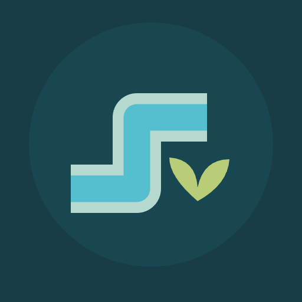

<- all projects

Paani Patch
PC
Volume
Live
Every drop, a new beginning.
A small community garden is waiting for water and a clever idea. Connect its rain tank to the planting beds and watch each patch come back to life. Turn the pipes, open the red valves and lead every drop from the blue tank to the seedlings, working around rocks and using branching pipes to feed several plants. Preview the flow for free before releasing the water, because leaks waste it. There are 100 garden puzzles across five chapters, from a single pipe to branching networks, plus a daily conservation puzzle and a calm mode with unlimited water. Earn seeds to grow the garden with new beds, a flower path and a rain garden.